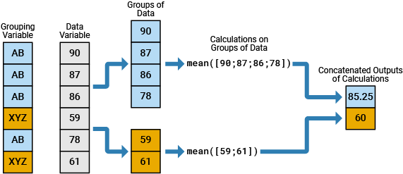
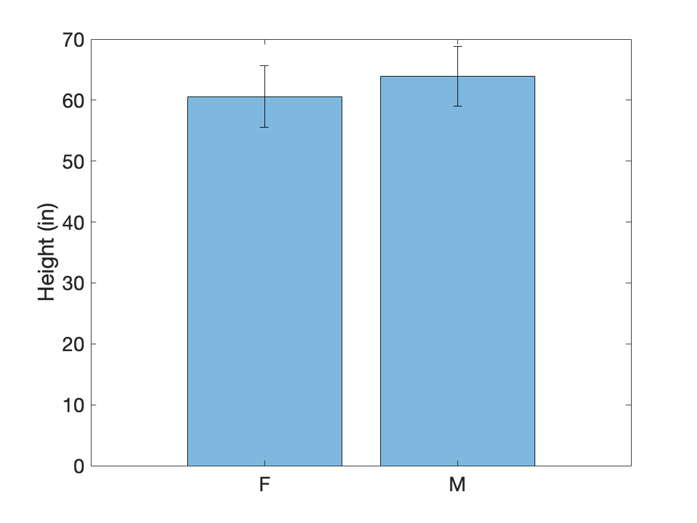
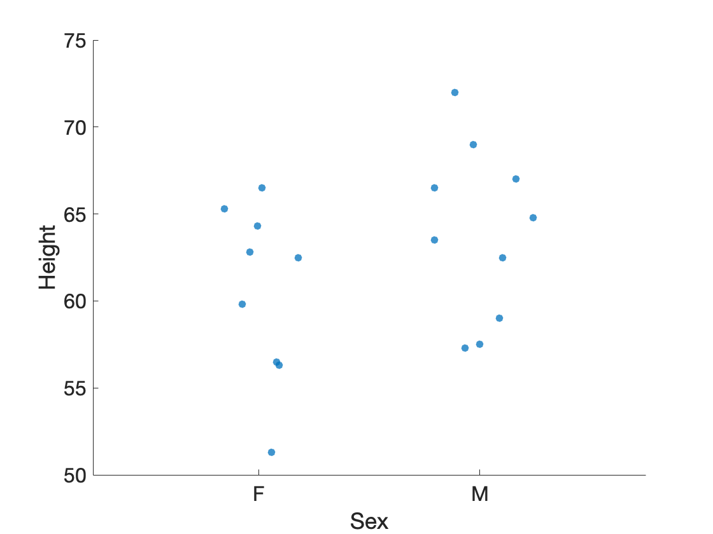
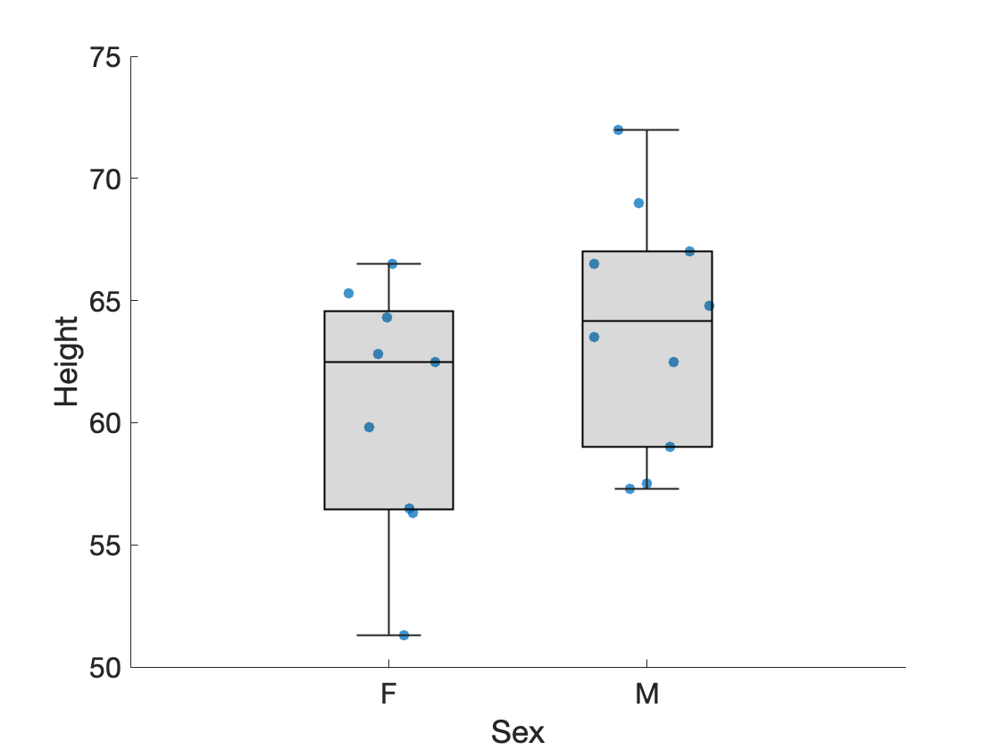
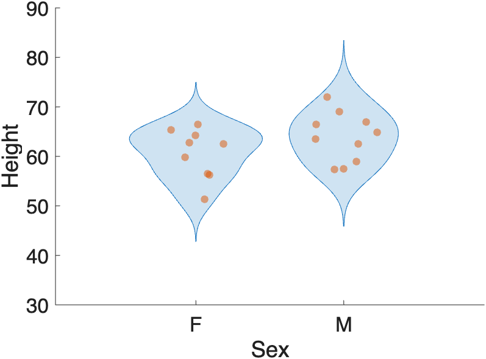
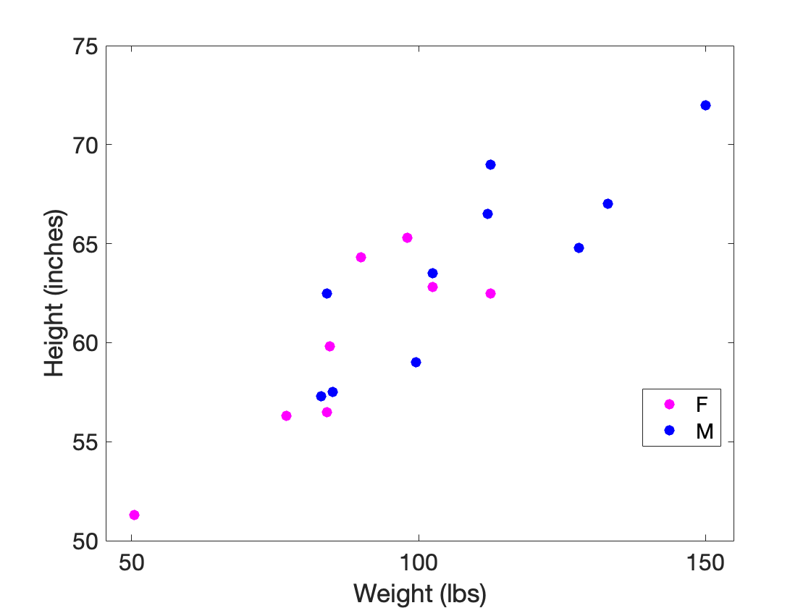
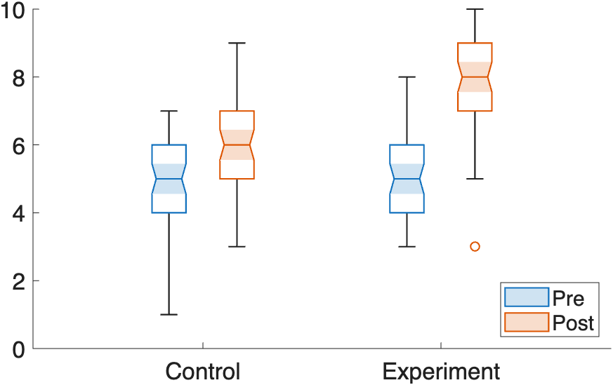
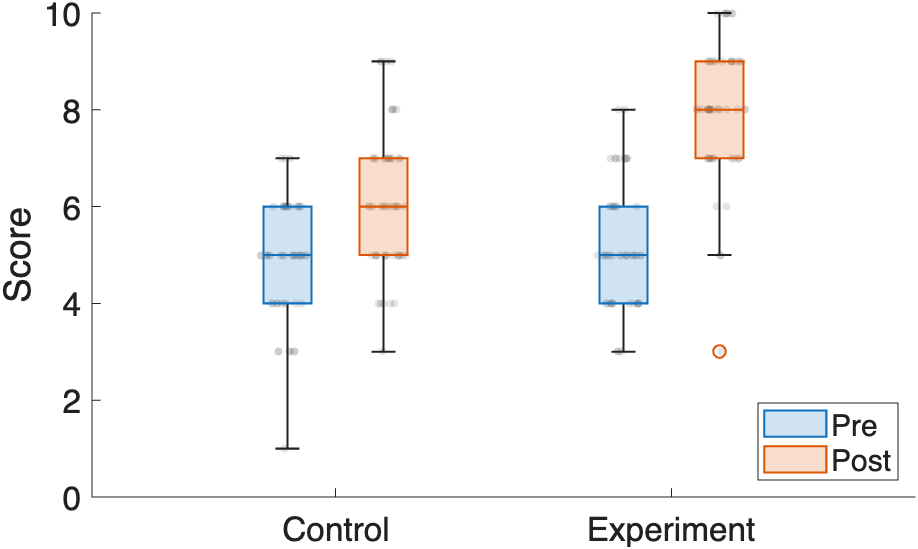

Group Statistics
Group statistics are statistics performed on subsets, or groups, of a dataset. This allows us to compare results across the groups. For example, we may want to compare the means of the female observations to the male observations.
When performing group statistics in MATLAB, it is often much easier to organize the data into a tidy spreadsheet, where each column contains a different variable in the dataset (like sex, height or weight), and each row contains an observation (like the sex, height, and weight of a given individual).
For a refresher on the distinction between quantitative and qualitative data—and why it matters when choosing a grouping variable or a plot type—see Data Types.
Overview
The table below summarizes the plot types covered in this page — what each one shows, when to use it, and the primary MATLAB function.
| Plot Type | What It Shows | Best Used When | Function |
|---|---|---|---|
| Bar | Group means with error bars | Comparing summary statistics across a small number of groups | bar + errorbar |
| Swarm | Every individual data point | You want to reveal the full distribution and sample size | swarmchart |
| Box | Median, quartiles, and outliers | Comparing spread and central tendency across groups | boxchart |
| Violin | Distribution shape (kernel density) + box plot | Groups have complex or multimodal distributions | violinplot |
| Scatter | Relationship between two quantitative variables, colored by group | Exploring correlations between variables across groups | gscatter* |
gscatter requires the Statistics and Machine Learning Toolbox*.
Combining Plot Types
Overlaying a swarm chart on a box or violin plot is a best-of-both-worlds approach: the box summarizes the distribution while the swarm shows every data point. Use hold on to layer them.
Useful Functions
-
groupcounts - counts instances of a group
-
groupsummary - calculates group statistics
Useful Resources
Grouping Variables
A grouping variable is a variable that helps group the observations (e.g. the rows).

In the above image, there are 2 groups, AB and XYZ. The data from the data variable column (in gray) is broken down into these two groups before processing.
Load Example Data
I have saved a csv file of some tabular data in a secret online location. You can download this data using the following MATLAB code:
| Load Data | |
|---|---|
…after loading the data, we typecast the Name column to a string and the Sex column to a categorical array. Type casting to a categorical array will make calculating the statistics and visualizing the data easier
Our data table, T, contains metrics from a group of adolescents.
T =
19×5 table
Name Sex Age Height Weight
_________ ___ ___ ______ ______
"Alfred" M 14 69 112.5
"Alice" F 13 56.5 84
"Barbara" F 13 65.3 98
"Carol" F 14 62.8 102.5
"Henry" M 14 63.5 102.5
"James" M 12 57.3 83
"Jane" F 12 59.8 84.5
"Janet" F 15 62.5 112.5
"Jeffrey" M 13 62.5 84
"John" M 12 59 99.5
"Joyce" F 11 51.3 50.5
"Judy" F 14 64.3 90
"Louise" F 12 56.3 77
"Mary" F 15 66.5 112
"Philip" M 16 72 150
"Robert" M 12 64.8 128
"Ronald" M 15 67 133
"Thomas" M 11 57.5 85
"William" M 15 66.5 112
…Remember, the columns contain the variables, so we have five variables: Name, Sex, Age, Height, and Weight. The rows contain the observations, so we have 19 observations. Row 1 contains all of the observed metrics from Alfred, whereas row 19 contains all the observed metrics from William.
This table has both Quantitative and Qualitative data. The Quantitative data columns are Age, Height, and Weight, whereas the Qualitative data columns are Name and Sex.
Calculating Stats by Group
In our analysis, we want to calculate stats like mean and standard deviation of the Quantitative data (e.g. mean height), but we want to group those statistics using the Qualitative data (e.g. mean female weight). So, we need to use the Sex column as the grouping variable.
The function groupcounts returns the number of group elements in a categorical array:
| groupcounts | |
|---|---|
…Our data has one more male than female.
The function groupsummary calculates group statistics in one fell swoop:
| Group summary for Height | |
|---|---|
The inputs into groupsummary are as follows:
- Table Variable -
T - Grouping Variable - "Sex" (notice we input just the name of the variable, not the whole column of data)
- String array of the stats to be performed: "mean" and "standard deviation"
- Variable to calculate stats on - "Height"
And we get our stats nicely packaged in a new table, s.
s =
2×4 table
Sex GroupCount mean_Height std_Height
___ __________ ___________ __________
F 9 60.589 5.0183
M 10 63.91 4.9379
…Each row in the table contains the stats from one of the groups in the grouping variable ("F" or "M"). Notice the table s includes the variables "mean_Height" and "std_Height". The applied stats function has been embedded into the name of the column.
We can run the statistics on multiple variables by inputting a string array of variable names in the last input. The following call to groupsummary calculates the mean and standard deviation for both the "Height" and "Weight" columns in T
| Group summary for Height and Weight | |
|---|---|
s =
2×6 table
Sex GroupCount mean_Height std_Height mean_Weight std_Weight
___ __________ ___________ __________ ___________ __________
F 9 60.589 5.0183 90.111 19.384
M 10 63.91 4.9379 108.95 22.727
…and now we have two additional variables in our stats table: mean_Weight and std_Weight.
Using a Custom Function
groupsummary isn't limited to built-in stat names like "mean" or "std". You can also pass a function handle to calculate a custom statistic. For example, to calculate the range (max − min) of Height for each Sex:
| Group summary with a custom function | |
|---|---|
…Since we didn't give groupsummary a name for our custom statistic, it names the resulting column generically: fun1_Height.
See Also
groupsummary isn't the only way to compute grouped statistics in MATLAB. The Tables page covers varfun with 'GroupingVariables', an alternate approach worth knowing.
Visualizing the Group Stats
Bar Plots
Along with calculating the group statistics, we often want to visualize the results. A bar plot with error bars can be used to visualize mean and standard deviation.
Here, we plot the data from the table s that we generated using groupsummary:
% set data
x = s.Sex; % grouping variable
y = s.mean_Height; % stat to plot
e = s.std_Height; % error
% plot data
figure
bar(x,y,FaceAlpha=0.5);
hold on
errorbar(x,y,e,'k',LineStyle="none")
ylabel('Height (in)')
…Notice the errorbar is a separate function from bar. Thus, we need to call hold on to ensure that the error bar doesn't overwrite the bar. Also, errorbar requires at minimum three inputs: the grouping variable, the mean data (height of the bar), and the standard deviation (height of the error bar). bar only needs the grouping variable and the mean data.

Swarm Chart
Also known as a beeswarm chart, these types of visualizations plot every single data point in a cluster, or swarm, of points. These are very useful types of plots to display the true distribution of the data. They are also useful in conjunction with box or violin plots (see below).
Many plotting functions accept grouping variables to sort plots by group.
| Swarm chart of male and female heights | |
|---|---|

Here we plot a swarm chart in which we separate the male and female heights. Each dot represents one observation. Male heights trend slightly higher than female heights.
Box Plots
Similarly, we can create box plots organized by groups using the boxchart function. Here we overlay the box plots onto the swarm charts.
| Box Plot with Swarm Chart overlay | |
|---|---|

Both
boxchartandswarmchartaccept the table T followed by string variable names to specify the grouping variable and the data variable to plot.
Violin Plots
A violin plot combines the features of a box plot with a kernel density plot, showing the distribution of the data.
| Violin plot with Swarm Chart overlay | |
|---|---|

…Notice the bulge in the violin plots indicates the highest concentration of data points.
Scatter
The function gscatter, included with the Statistics and Machine Learning Toolbox, plots grouped data in different colors:
…notice again that here we input the column data (Weight, Height, Sex) from T using dot notation. We also include a couple extra inputs: 'mb' - indicates the two group colors to use, magenta and blue. 25 - indicates the size of the dot.

This scatter plot indicates that Height and Weight are positively correlated for both males and females. Notice that the function
gscatterautomatically includes a legend in the plot.
Multiple Grouping Variables
Data can have multiple groups. Consider the following data:
T =
200×3 table
Quiz Treatment Score
____ __________ _____
Pre Control 5
Pre Control 3
: : :
Post Experiment 7
Post Experiment 7
In this table of invented quiz scores, there are two grouping variables: "Quiz" and "Treatment".
The "Quiz" variable has two levels, Pre and Post, which indicate when the quiz was taken:
Pre: taken before the experiment started (a baseline score)Post: taken after the experiment was completed (the treatment score)
The "Treatment" variable also has two levels, Control and Experiment, which indicate whether or not a student received an intervention (like a new educational module):
Control: no interventionExperiment: intervention received
Group Summary using Multiple Groups
We can use multiple groups in groupsummary by simply inputting the group names as a string array into the second input:
| Group Summary with Multiple Groups | |
|---|---|
stats =
4×5 table
Quiz Treatment GroupCount mean_Score std_Score
____ __________ __________ __________ _________
Pre Control 50 4.86 1.2124
Pre Experiment 50 5.22 1.2664
Post Control 50 6.1 1.4604
Post Experiment 50 8.02 1.4356
The output,
stats, now has a row for each combination of the grouping variables, e.g. "Pre-Control", "Pre-Experiment", etc.
Visualizing Multiple Groups
We can visualize multiple grouping variables using boxchart through a combination of sorting along the x-axis and color, as follows:
| Box Chart with multiple groupings | |
|---|---|

In this box chart, we group the data first by Treatment — visible along the x-axis, where
Controlis plotted first, followed byExperiment. We then group by Quiz type using theGroupByColorinput: Pre-quiz scores appear in blue, Post-quiz scores in orange.
Box Plot Notches
Setting Notch="on" in boxchart adds a notch (indentation) on each side of a box plot around the median. Notches represent a 95% confidence interval around the median. If the notches of two boxes do not overlap, the medians are approximately significantly different at the 0.05 level.
Based on the notches, the Pre-quiz scores (blue) do not differ significantly between groups, but the Post-quiz scores (orange) do — and within each group, Pre- and Post-quiz scores are also significantly different from each other.
Overlay swarm charts
The swarmchart function does not support the GroupByColor option, so we can't simply call swarmchart(T.Treatment, T.Score, GroupByColor=T.Quiz) the way we did with boxchart. Instead, we need to manually plot each group as a separate swarmchart call.
The challenge is that boxchart with GroupByColor doesn't plot each group at the exact x-axis tick positions — it offsets them slightly to either side. If we plotted the swarm charts at the raw Control/Experiment positions, they would land in the wrong place. To get the correct x-positions, we capture the boxchart output as a handle (hbc). This handle stores an array of objects — one per color group — each containing the x- and y-data already sorted and positioned. We extract those coordinates and use them directly in swarmchart, adding a small additional offset so the swarm dots sit on top of their corresponding box.

Notice that the box plots are not plotted along the x-axis right at
ControlandExperiment, but are offset to either side of those tick marks. By adding an offset to the swarm plot position along the x-axis, we can properly overlay the swarm plots on their corresponding box plots.
Challenge
Group Statistics and Visualization
Using the table T from the "Load Example Data" section above:
- Use
groupsummaryto calculate the mean and standard deviation ofWeight, grouped bySex. - Create a box chart of
Weightgrouped bySex.